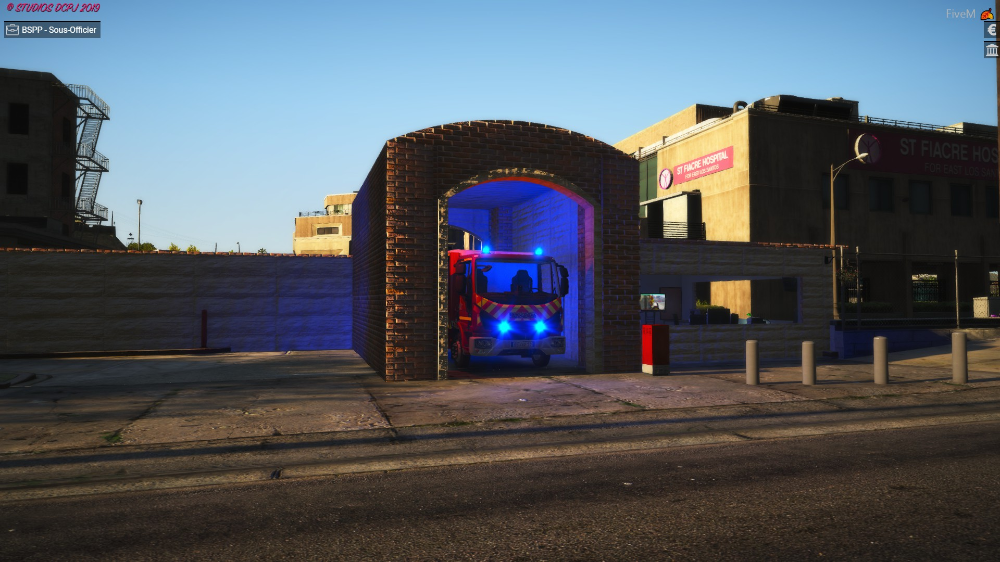
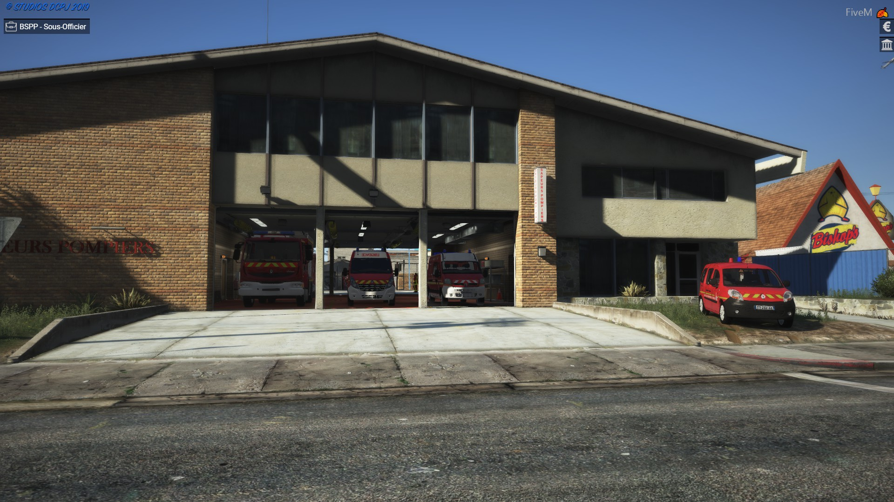

Caserne de Champerret
La Caserne de champerret ce trouve dans le 20ème arrondissement de Paris, elle est consitué de nombreux véhicules de secours et acceuille les officiers de la brigade.
Cliquer sur l'image pour découvrir les hommes de cette Caserne ainsi que les véhicules qu'elle contient
Caserne de Port Royal
La Caserne de Port Royal ce trouve dans le 13ème arrondissement de Paris, elle est consitué de nombreux véhicules de secours et acceuille les Sous officiers et les hommes du rang.
Cliquer sur l'image pour découvrir les hommes de cette Caserne ainsi que les véhicules qu'elle contient
